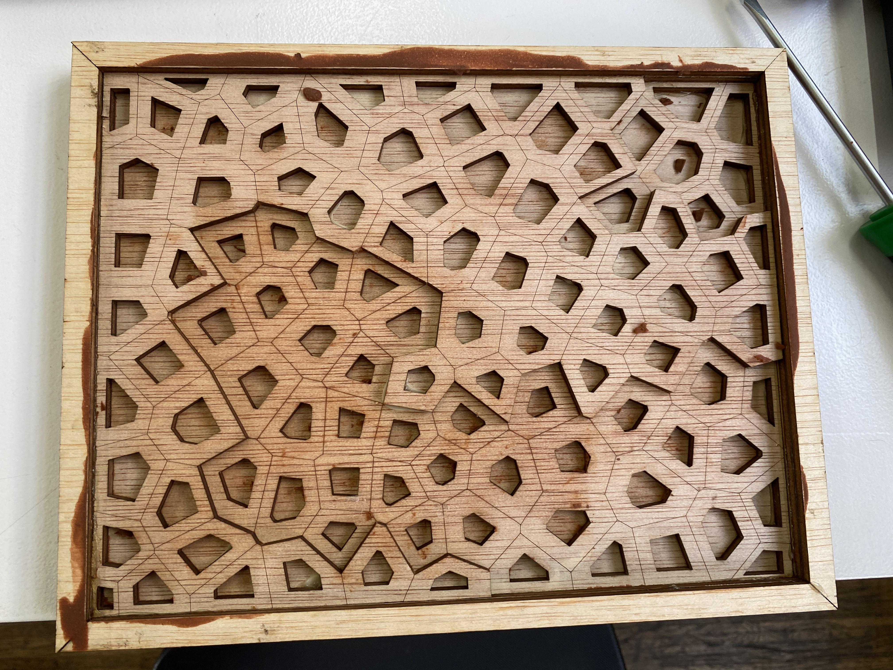
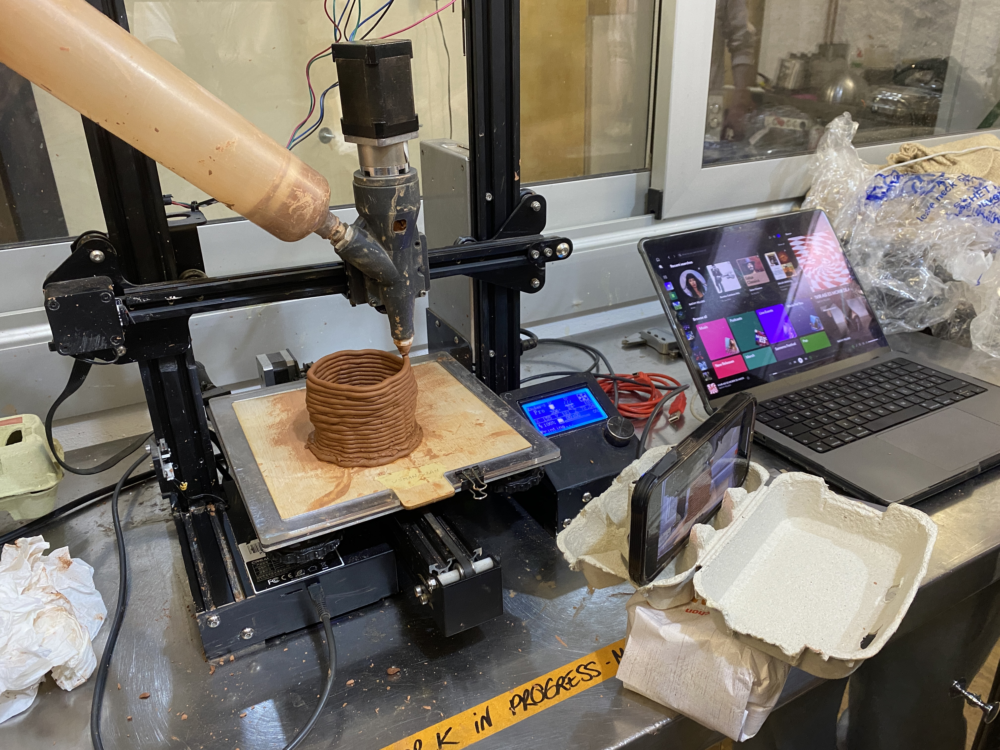

M1 Laser Cutting + Intro to Biomaterials

M2 3D Printing + Growing Materials

Micro Challenge 1
Micro Challenge 2
Go Back Home 👈
As part of the program, we’ve been taking the seminar Digital Design for Prototyping. Based on the program FabAcademy, DPD teaches us how the fablab’s machines work and the different possibilities they offer to prototype. Also, the seminar takes modules from the fabricademy program to teach us the bases of biomaterials.
👉 Next Up: Designing with Collective Intelligence